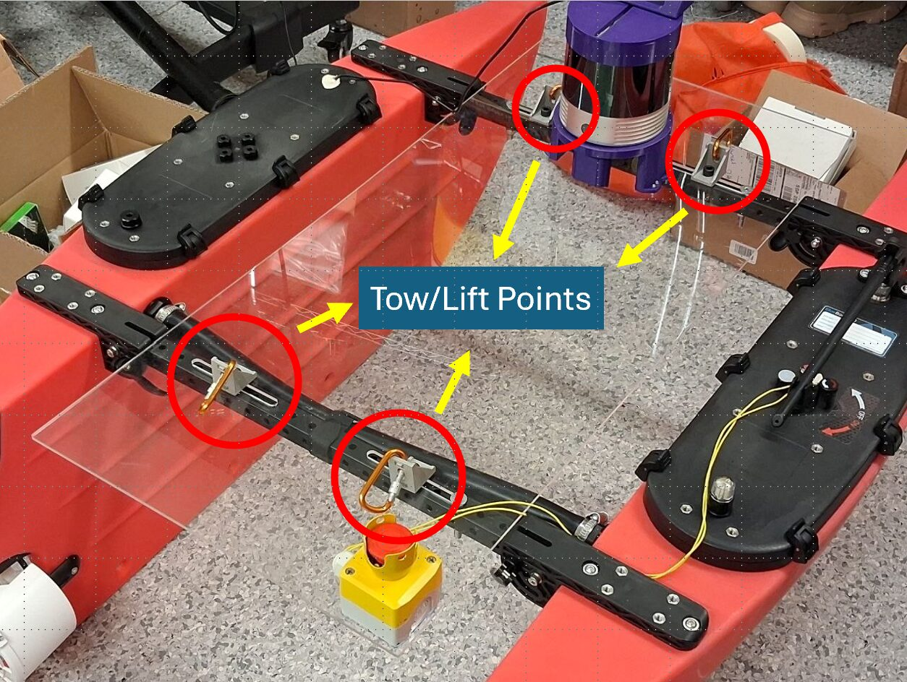
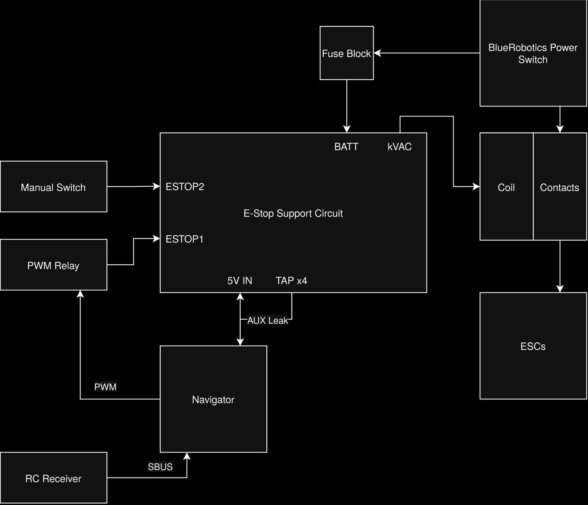
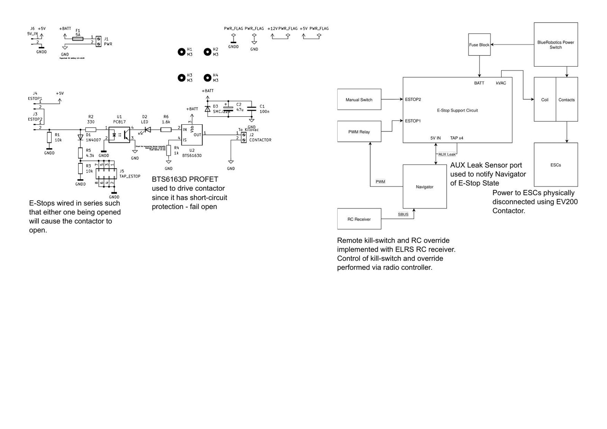

Vehicles / BlueBoat
BlueBoat
The surface vessel runs the safe passage, docks and fights the window fire, and is the only vehicle that has to keep a status light visible at a hundred metres while doing it.
The platform
A Blue Robotics BlueBoat: a 1.2 m catamaran with two thrusters, an ArduRover autopilot on a Pixhawk, and a companion computer that carries the WiFi HaLow link back to shore. The ground station drives it over MAVLink, so the boat is reached the same way in simulation, in software in the loop and on the water.
- HullBlueBoat catamaran, 1.2 m
- AutopilotArduRover on Pixhawk
- Autonomy modesGUIDED, with AUTO for surveys
- Ground linkWiFi HaLow, MAVLink at 14550
- Telemetry to shorePosition 4 Hz, status 1 Hz

Safety systems
Section 5.2 of the handbook is specific about what a surface vessel has to carry, and all of it is on the boat.
| Requirement | On the boat |
|---|---|
| Onboard and remote kill switches, fail safe, red, 3 cm or larger | Mushroom head switch on the cross member and a wireless stop that cuts propulsion power within two seconds |
| Shrouded propellers, 5 cm clearance or a finger guard | Printed shrouds over both thrusters, each labelled |
| Marked multi-point tow harness and lift points | Four marked points on the frame with a matching harness |
| Visual feedback showing kill, manual and autonomous | Mast light visible through 360 degrees in daylight |
| Manual control independent of a laptop | Dedicated transmitter and receiver, documented in the block diagram below |

{kind=link}

{kind=link}

How it is driven
The ground station holds the boat in GUIDED and sends position targets, which is what the safe passage and the dock approach are built from. Arming goes through ArduPilot's own prearm checks with a retry, because the GPS prearm failure is the usual blocker on this hull and the retry is what turns a failed launch into a thirty second delay.
Leaving autonomy ends scoring for an attempt under rule 5.1, so manual takeover is treated as an abort in the console rather than as a mode change: the run is marked not scoring and the operator sees it in the header.
Task 3 adds two things on top of navigation: a dock approach that has to place the hull inside a bay, and a water jet aimed at a 25 cm window. Both are driven from the same task state machine as everything else, with a step per action, so a suspension in the middle of a dock approach resumes at the step it stopped on.
Perception
The buoy detector is a YOLOv5s model trained on the MHSeals set, at 0.945 mAP@0.5 and 0.693 mAP@0.5:0.95 over 27 classes. The colour classes transfer directly to the 2026 light beacons; the shape classes do not, because the 2026 buoys carry lights rather than shapes.
Camera to lidar fusion from the lab's earlier work sits at about 8 cm of range error with a systematic 8 to 9 cm lateral and vertical bias, which is the figure the passage transit planning is built around.
Evidence
The boat under autonomous control, with the status light showing the mode it is in. Submitted as part of the surface vehicle readiness package.
The full readiness package, including the kill switch drawings and the harness photographs, is listed on the proof of readiness page.